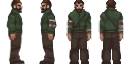
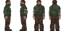
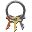
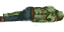
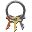
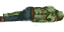

<<<<<<< Updated upstream
=======
>>>>>>> Stashed changes


 

 

Grass tile by qubodup, Bart K., Blarumyrran
opengameart.org
Construct 2 - Cloning The Classics: Pacman


Grass tile by qubodup, Bart K., Blarumyrran
opengameart.org
Construct 2 - Cloning The Classics: Pacman